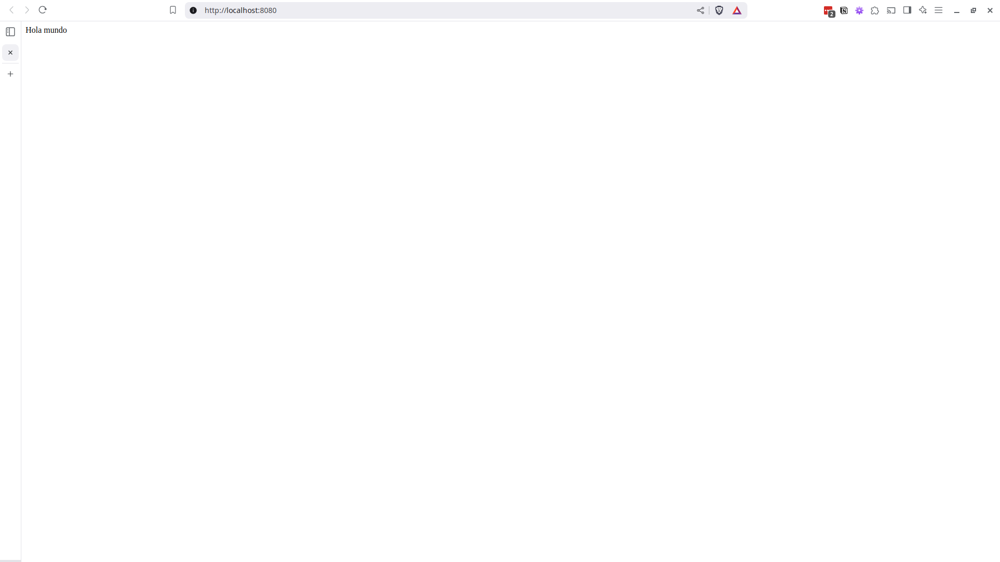
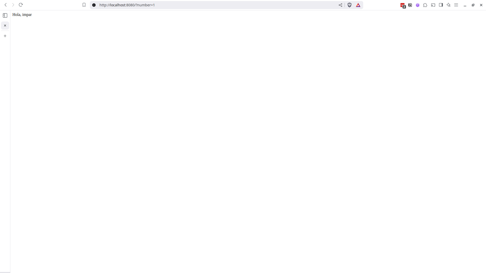
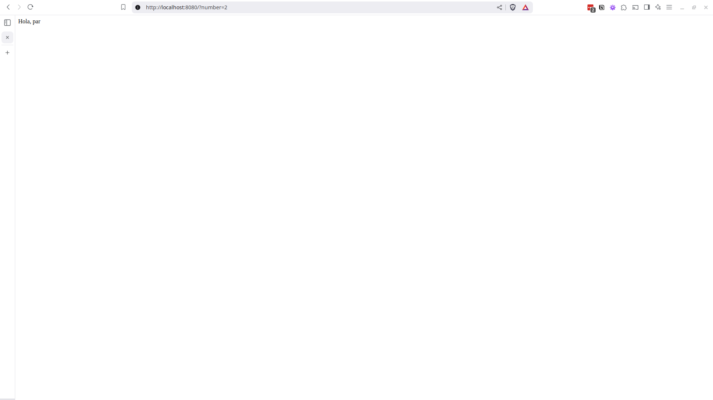

{kind=link}

Los lenguajes de programación evolucionan a una velocidad increíble, esto puede generar que tengamos que trabajar con distintas versiones de un mismo lenguaje de programación para distintos proyectos pero en una misma computadora.
Este es un problema bien conocido y con algunas soluciones que las distintas comunidades han ido desarrollando con el tiempo, dándonos herramientas específicas como nvm para node.js o algunas con un mayor alcance como asdf-vm.
Y aunque estas soluciones pueden ser excelentes a la hora de permitirnos cambiar rápidamente entre versiones de nuestros lenguajes de programación, también presentan algunos inconvenientes, ya que, al basar su funcionamiento en el compilado desde el código fuente de las distintas versiones, requieren que uno cuente con todas las dependencias necesarias para poder compilarlas.
Esto en muchos casos puede resolverse simplemente con la ayuda de Google, pero en otros casos puede resultar bastante complicado.
Especialmente si tu sistema operativo ya no provee las versiones específicas de las dependencias necesarias para compilar alguna versión en particular (por ser demasiado nuevas o demasiado viejas).
Otra complejidad de estas herramientas aparece al tener que trabajar en equipo, ya que requieren que cada uno, de manera individual, configure su computadora según las necesidades del proyecto.
¿Pero qué tal si existiese una herramienta que permitiera asegurar la replicabilidad de los entornos de desarrollo?
Y no solo de los lenguajes de programación, sino de todas las herramientas adicionales que se puedan requerir para mejorar la Developer eXperience, permitiendo incluso instalar extensiones específicas en tu IDE y teniendo todo esto versionado junto con el código fuente del proyecto.
Pues existe.
Hoy vengo a compartir una herramienta que uso cada vez más en mis proyectos de desarrollo software: devcontainers.
Devcontainers utiliza virtualización mediante containers para crear entornos de desarrollo personalizables, replicables y versionables.
En esta guía exploraremos sus casos de uso y configuraciones sin detenernos en conceptos propios de docker (el motor de containers que utiliza por defecto).
En los ejemplos utilizaremos Visual Studio Code, Docker y Docker compose.
Tener algunos conocimientos básicos de estas herramientas o de GNU Linux (S.O. utilizado dentro de los containers) puede ayudar a facilitar el entendimiento de algunas de las cosas que haremos a lo largo de esta guía.
Al momento de escribir esto me encuentro utilizando:
Todos los pasos de esta guía deberían poder seguirse también, sin problemas, tanto utilizando Docker Engine como en los sistemas operativos Mac o Windows (utilizando Windows Subsystem for Linux).
Para instalar devcontainers en Windows existe una guía, escrita por el equipo de Visual Studio Code.
Devcontainers posee integraciones con una amplia lista de IDEs y herramientas de desarrollo, no solo se integra con el Visual Studio Code.
Mención especial para vscli, una herramienta que aunque no se encuentra listada oficialmente, se ve interesante.
Para poder seguir los distintos pasos deberán contar con Docker instalado y ejecutándose.
Por último, para aquellos con experiencia en Docker. Muchos de los “problemas” que solucionaremos a lo largo de esta guía mediante las características y opciones de devcontainers podrían resolverse (a veces, incluso de manera más simple) mediante el uso de Docker puro o eligiendo mejor las imágenes base, pero el objetivo aquí es explorar estas características y opciones.
Como ejemplo para poder explicar el funcionamiento de estos entornos de desarrollo crearemos una pequeña aplicación PHP.
Por lo que en un directorio vacío comenzaremos creando el archivo public/index.php y en el escribiremos:
Hola mundo
¡Excelente! Ya tenemos la aplicación más simple del mundo. Pero para poder ejecutarla necesitamos PHP. Y ahí es en donde entra en juego devcontainers.
Para utilizarlo comenzaremos por instalar la extensión Dev Containers del VSCode.
Pueden buscarla en la pestaña de extensiones.
O bien instalarla mediante el comando ext install ms-vscode-remote.remote-containers en el Qucik Open (Ctrl+p) del VSCode.
Ya con la extensión instalada y activa, en la paleta de comandos (Ctrl+Shift+p) ejecutaremos Dev Containers: Add Dev Container Configuration Files.
Esto nos desplegará un pequeño Wizard en el que configuraremos algunas opciones básicas del entorno de desarrollo.
Where would you like to create your container configuration?
> Add configuration to workspace
Elegimos esta opción para poder versionar el entorno de desarrollo junto con el resto de la aplicación.
Select a container configuration template or enter a custom template id
> PHP (devcontainers)
Elegimos la plantilla para proyectos PHP publicada por el equipo de devcontainers.
PHP version (use -bookworm, -bullseye variants on local arm64/Apple Silicon):
> 8.2-bullseye (default)
Seleccionamos la versión de PHP que deseamos utilizar. En esta guía usaremos PHP 8.2.
Los sufijos -bullseye y -bookworm indican la versión de Debian que el container utilizará como base para el entorno de desarrollo.
Select additional features to install
De memento no agregaremos ninguna funcionalidad adicional, por lo que solo damos click en OK par finalizar la configuración.
Finalmente, se nos preguntará si deseamos configurar Github Dependabot para que actualice automáticamente las dependencias de devcontainers. Para mantener esta guía lo más simple posible continuaremos sin esta opción, pero en proyectos reales puede ser muy recomendable utilizar esta actualización automática de dpenedencias.
Luego de seguir estos pasos se creará el archivo ./devcontainer/devcontainer.json y el VSCode nos preguntará si deseamos reabrir el proyecto dentro del container (cartel de abajo a la derecha)
Damos click al botón Reopen in Container.
Si por la razón que fuese el cartel dejase de visualizarse, podemos abrir la paleta de comandos y ejecutar Dev Containers: Reopen in Container
Al hacer esto se comenzará a crear el container con el entorno de desarrollo (este proceso puede demorar algunos minutos la primera vez).
Al terminar de crear el container y conectarse deberíamos tener en pantalla algo así:
Sabemos que nos encontramos conectados al container porque así lo indica en la parte inferior izquierda del VSCode (barra azul) y también el nombre del proyecto (barra superior central).
Ahora que ya nos encontramos dentro del entorno de desarrollo podemos, desde la terminal integrada del Visual Studio Code, ejecutar: php -S 0.0.0.0:8080 -t public/ y con esto habremos puesto nuestra aplicación en ejecución. Si en una pestaña de nuestro navegador web introducimos la URL http://localhost:8080/ deberíamos ver:
También deberíamos ser capaces de commitear e incluso pushear nuestra aplicación a Github desde dentro del container, ya que, este se encarga de replicar la configuración de git de nuestro usuario local.
Link al repositorio del proyecto de ejemplo con los cambios hasta este punto de la guía.
El equipo de devcontainers mantiene una serie de templates e imágenes predefinidas para facilitar el despliegue de entornos de desarrollo.
En este link pueden encontrar la lista completa de templates.
Y en este link una lista de las imágenes mantenidas por el equipo de devcontainers.
En caso de que no encuentren ninguno que se ajuste a las necesidades exactas de su proyecto, siempre pueden optar por el template base de Debian y ajustarlo según necesiten.
Lo más básico y primero que nos enfocaremos en cambiar es la imagen a partir de la cual se genera el entorno de desarrollo.
Volviendo a nuestra aplicación de ejemplo, supongamos que la versión de PHP que queremos utilizar es la última disponible (a día de hoy, la versión 8.4).
Durante la ejecución del Wizard, y utilizando el template de PHP las únicas versiones que se nos ofrecían eran la 8.0, 8.1 y 8.2.
Lo bueno es que al utilizar una tecnología bien establecida como lo son los containers contamos con muchísimas imágenes ya preparadas en distintos repositorios, que podemos utilizar sin problemas.
Primero verificamos la versión actual de PHP ejecutando, desde la terminal integrada del VSCode:
php -v
En nuestro caso, utilizaremos la imagen oficial de PHP, proveniente de Docker Hub.
Desde Docker Hub, en la sección de tags buscamos el correspondiente a la versión 8.4.
Ahora que ya tenemos el nombre de la imagen y tag que deseamos utilizar en nuestro .devcontainer/devcontainer.json modificamos el atributo image.
{
"name": "PHP",
// Or use a Dockerfile or Docker Compose file. More info: https://containers.dev/guide/dockerfile
- "image": "mcr.microsoft.com/devcontainers/php:1-8.2-bullseye",
+ "image": "php:8.4-cli-bullseye",
// Features to add to the dev container. More info: https://containers.dev/features.
// "features": {},
Luego de esto, desde la paleta de comandos, ejecutaremos Dev Containers: Rebuild Container.
Al hacer esto, el antiguo container se destruirá y se creará uno nuevo con los cambios que hemos realizado.
Una vez que el nuevo container ha sido creado, volvemos a revisar la versión de PHP.
Link al repositorio del proyecto de ejemplo con los cambios hasta este punto de la guía.
Ya tenemos la versión de PHP que queremos utilizar, pero si intentamos commitear nuestros cambios nos encontraremos un pequeño inconveniente.
La imagen oficial de PHP está diseñada para ser utilizada en entornos productivos, por lo que no cuenta con git instalado.
Por suerte contamos con un mecanismo muy simple para agregar herramientas adicionales a nuestros entornos de desarrollo, mediante las Features de devcontainers.
Para configurar la features, en la paleta de comandos escribimos Dev Container: Configure Container Features.
Esto nos desplegará una lista de features disponibles, similar a la que ya vimos al ejecutar inicialmente el wizard.
Aquí buscamos Git (from source) y marcamos su checkbox.
Luego damos click a OK y en el siguiente paso elegimos la opción Keep Defaults.
Esto nos agregará una nueva sección en nuestro archivo de configuración.
// "customizations": {},
// Use 'forwardPorts' to make a list of ports inside the container available locally.
- "forwardPorts": [8080]
+ "forwardPorts": [8080],
+ "features": {
+ "ghcr.io/devcontainers/features/git:1": {}
+ }
// Use 'postCreateCommand' to run commands after the container is created.
// "postCreateCommand": "sudo chmod a+x \"$(pwd)\" && sudo rm -rf /var/www/html && sudo ln -s \"$(pwd)\" /var/www/html"
Podemos revisar la lista completa de Features en este link.
Para reconstruir el container con el agregado de git damos click al botón Rebuild que nos debería haber aparecido abajo a la derecha o bien, en la paleta de comandos, ejecutamos Dev Containers: Rebuild Container
Et voila! Una vez que el container se haya reconstruido ya podremos utilizar git.
Link al repositorio del proyecto de ejemplo con los cambios hasta este punto de la guía.
Tener un entorno de desarrollo con la versión más nueva de nuestro lenguaje de programación y git está muy bien, pero todavía podemos llevarlo al siguiente nivel.
El único próximo paso lógico es agregar herramientas de debugging, porque, enfrentemos la realidad. Nuestra aplicación el día de mañana podría tener millones de usuarios activos. ¿A fin de cuentas, por qué alguien no querría una aplicación diseñada específicamente para saludar al mundo?
Pero junto con los usuarios llegan los pedidos de nuevas funcionalidades.
Saludar al vecino, saludos de cumpleaños, quizás una comunidad de yoga quiera un saludo al sol.
Y junto con las nuevas funcionalidades llegan los bugs.
Definitivamente, necesitamos agregar herramientas de debugging a nuestro entorno de desarrollo.
Según la documentación de PHP en Docker Hub, instalar xdebug es tan simple como ejecutar 2 comandos.
pecl install xdebug
docker-php-ext-enable xdebug
Podríamos simplemente ejecutar esto en nuestra terminal y tendríamos la extensión instalada… Hasta que por alguna razón reconstruyamos nuestro container de desarrollo.
Podríamos dejar una nota en nuestro README indicando que luego de crearse el container deben ejecutarse dichos comandos… Si tan solo siguiera existiendo gente que leyera la documentación de los proyectos.
Por suerte para nosotros, devcontainers nos da una mejor solución.
Podemos configurarlo para que luego de crearse el container ejecute comandos que definamos.
Esto lo haremos mediante el atributo postCreateCommand de nuestro archivo de configuración.
"forwardPorts": [8080],
"features": {
"ghcr.io/devcontainers/features/git:1": {}
- }
+ },
// Use 'postCreateCommand' to run commands after the container is created.
- // "postCreateCommand": "sudo chmod a+x \"$(pwd)\" && sudo rm -rf /var/www/html && sudo ln -s \"$(pwd)\" /var/www/html"
+ "postCreateCommand": "pecl install xdebug && docker-php-ext-enable xdebug"
// Uncomment to connect as root instead. More info: https://aka.ms/dev-containers-non-root.
// "remoteUser": "root"
Una vez más reconstruimos nuestro container y revisamos que nuestros cambios hayan tenido éxito con php -m | grep xdebug.
Luego de ejecutar el comando la terminal devuelva xdebug es indicador de que la extensión se encuentra instalada y activa.
En la documentación de devcontainers pueden encontrar la lista completa de los puntos del ciclo de vida del container en los que es posible ejecutar comandos personalizados.
Link al repositorio del proyecto de ejemplo con los cambios hasta este punto de la guía.
¡El desarrollo de nuestra aplicación va viento en popa! Pero algo no termina de sentirse correcto.
¿Cómo es posible que cada vez que abrimos nuestro container de desarrollo debamos iniciar manualmente nuestro servidor web?
¡Inaceptable!
Aprovecharemos el atributo postStartCommand para arrancar automáticamente nuestro web server.
},
// Use 'postCreateCommand' to run commands after the container is created.
- "postCreateCommand": "pecl install xdebug && docker-php-ext-enable xdebug"
+ "postCreateCommand": "pecl install xdebug && docker-php-ext-enable xdebug",
+
+ "postStartCommand": "php -S 0.0.0.0:8080 -t public/"
// Uncomment to connect as root instead. More info: https://aka.ms/dev-containers-non-root.
// "remoteUser": "root"
Reconstruimos nuestro container y podremos acceder a nuestra aplicación en http://localhost:8080 sin necesidad de ejecutar comandos adicionales de manera manual.
Mientras observamos con aires de victoria como nuestra aplicación saluda al mundo, un pensamiento nos ataca por la retaguardia sin previo aviso.
Un pensamiento que comenzó a formarse en lo más recóndito de nuestra mente, utilizando memorias distantes, ahora viene a por nosotros.
Buenas prácticas…
… The 12 Factor App, una de las convenciones de DevOps para sistemas cloud…
… El Built-in web server de PHP, tal como indica su documentación, no debería ser utilizado en entornos productivos.
… Entonces, según el factor Dev/Prod Parity de los 12 Factor App, tampoco deberíamos estar usándolo en nuestro entorno de desarrollo, ya que debemos buscar que nuestros ambientes de producción y desarrollo sean lo más similares posible…
😞
¡No importa! Algo como esto no va a detenernos.
Vamos a usar en nuestro entorno de desarrollo el mismo websever que utilizaremos en producción.
Existen varias opciones perfectamente válidas, pero hoy usaremos FrankenPHP.
Para esto, eliminaremos el postStartCommand que acabamos de agregar y cambiaremos la imagen por la de FrankenPHP.
{
"name": "PHP",
// Or use a Dockerfile or Docker Compose file. More info: https://containers.dev/guide/dockerfile
- "image": "php:8.4-cli-bullseye",
+ "image": "dunglas/frankenphp:1-php8.4",
// Features to add to the dev container. More info: https://containers.dev/features.
// "features": {},
@@ -18,9 +18,7 @@
},
// Use 'postCreateCommand' to run commands after the container is created.
- "postCreateCommand": "pecl install xdebug && docker-php-ext-enable xdebug",
-
- "postStartCommand": "php -S 0.0.0.0:8080 -t public/"
+ "postCreateCommand": "pecl install xdebug && docker-php-ext-enable xdebug"
// Uncomment to connect as root instead. More info: https://aka.ms/dev-containers-non-root.
// "remoteUser": "root"
La imagen de FrankenPHP, por defecto, tiene su WORKDIR configurado en /app/public/ asi que el proyecto intentará montarse allí. Pero nosotros ya contamos con un directorio public/ por lo que deberemos configurar tanto el working dir como el punto de montaje.
// Or use a Dockerfile or Docker Compose file. More info: https://containers.dev/guide/dockerfile
"image": "dunglas/frankenphp:1-php8.4",
+ "workspaceMount": "source=${localWorkspaceFolder},target=/app,type=bind,consistency=cached",
+ "workspaceFolder": "/app",
+
// Features to add to the dev container. More info: https://containers.dev/features.
// "features": {},
Dentro de wokspaceMount estamos utilizando una variable propia de devcontainers (${localWorkspaceFolder}), para más información sobre las variables disponibles y como utilizarlas pueden visitar este link.
Además, siguiendo la documentación de FrankenPHP agregaremos algunas variables de entorno para configurar nuestro webserver.
// Use 'forwardPorts' to make a list of ports inside the container available locally.
"forwardPorts": [8080],
+
+ "containerEnv": {
+ "SERVER_NAME": "http://localhost:8080",
+ "CADDY_GLOBAL_OPTIONS": "auto_https off" // Disable automatic HTTPS
+ },
+
"features": {
"ghcr.io/devcontainers/features/git:1": {}
},
El atributo forwardPorts no lo modificaremos ya que estamos configurando nuestro nuevo webserver para escuchar en el puerto 8080 por lo que queremos seguir exponiendo este mismo puerto.
Por último configuraremos overrideCommand para evitar que devcontainers sobreescriba el proceso default de la imagen, ejecutar el webserver, ya que eso es exactamente lo que queremos que haga.
// Or use a Dockerfile or Docker Compose file. More info: https://containers.dev/guide/dockerfile
"image": "dunglas/frankenphp:1-php8.4",
+ "overrideCommand": false,
+
"workspaceMount": "source=${localWorkspaceFolder},target=/app,type=bind,consistency=cached",
"workspaceFolder": "/app",
El resultado final debería ser que nuestro .devcontainer/devcontainer.json se vea así:
{
"name": "Helloer",
"image": "dunglas/frankenphp:1-php8.4",
"overrideCommand": false,
"workspaceMount": "source=${localWorkspaceFolder},target=/app,type=bind,consistency=cached",
"workspaceFolder": "/app",
"forwardPorts": [8080],
"containerEnv": {
"SERVER_NAME": "http://localhost:8080",
"CADDY_GLOBAL_OPTIONS": "auto_https off" // Disable automatic HTTPS
},
"features": {
"ghcr.io/devcontainers/features/git:1": {}
},
"postCreateCommand": "pecl install xdebug && docker-php-ext-enable xdebug"
}
Reconstruimos nuestro container y una vez más tenemos nuestra aplicación funcionando en nuestro entorno de desarrollo, esta vez utilizando el mismo webserver que utilizaríamos en producción.
Al haber cambiado el workspaceFolder en la configuración es posible que luego de recrear el container el Visual Studio Code falle al intentar conectarse. Si esto ocurre solo debemos dar click a Open workspace y buscar el directorio que hemos configurado para ser el nuevo workspaceFolder (
/app/).
Link al repositorio del proyecto de ejemplo con los cambios hasta este punto de la guía.
Por fin, nuestro entorno de desarrollo es perfecto y estamos listos para seguir agregando valor a la vida de millones mediante nuestra aplicación.
Nuestra siguiente funcionalidad será recibir un número como parámetro y saludar indicando si el número es par o impar.
En PHP se utiliza el gestor de dependencias composer para gestionar bibliotecas de terceros en nuestra aplicación.
Procedemos a instalar la biblioteca que necesitamos ejecutando en la terminal integrada, composer require kylelamse/is-even.
Otra herramienta que nos falta.
🫠
Si trabajan como DevOps (si, si, ya se que ne realidad no es un rol), SysAdmin, Platfom engineer, etc lo que van a leer no es ninguna novedad; pero si son programadores es importante que sepan esto.
Este tipo de trabajos, aunque gratificantes cuando las cosas finalmente funcionan, pueden ser sumamente tediosos e iterativos.
Aprecien que alguien se preocupe por ustedes e intente facilitarles las cosas. Si ven un DevOps cansado ofrezcanle un cafe y recuereden, en sú día comprar unas facturas para compartir o algo por el estilo.
Llegados a este punto creo que ya todos tenemos bastante claro como proceder.
Buscamos si existe una feature de composer.
Sí, existe.
La agregamos a nuestro archivo de configuración y reconstruimos el container.
O tal vez nó…
Quizás para cuando estén leyendo esta guía este problema ya se haya arreglado, pero hoy, al agregar el feature de composer ocurre lo siguiente:

El container falla.
Cuando se encuentren con un error que impide que el container compile correctamente, hay algunas cosas que pueden probar.
Primero pueden dar click a Retry. Si el error proviene de alguna causa externa y temporal (por ejemplo, si se cortó el internet mientras el container se creaba) con esto debería solucionarse.
Si Retry no funciona, pueden dar click en Edit devcontainer.json Locally y comenzar a leer, de abajo hacia arriba, el log que se abrirá del lado derecho de la pantalla, mientras rezan para que la causa del error sea comprensible.
Si conocen mejores maneras de debuggear estas configuraciones, por favor déjenlo abajo, en los comentarios. Yo ya perdí bastantes horas de mi vida con errores de lo más simple, pero todavía están a tiempo de ayudar a personas que se estén iniciando en este mundo.
El único consejo real que puedo darles es que commiteen tan seguido como puedan. Cada vez que tengan una versión de la configuración que compila (aunque todavía no funcione al 100% como ustedes quieren) commiteenla.
En este caso el problema está claramente en el feature de composer.
Si revisamos la documentación del feature vemos que el único parámetro que acepta es para configurar la versión que se instalará, por lo que no parece que haya mucho que podamos hacer desde allí.
En nuestro caso será más fácil buscar una manera de instalar composer por algún otro medio, pero si se encuentran con algún problema persistente que los bloquea pueden recurrir a los Issues de Github del repositorio que corresponda.
Composer cuneta con una breve guía para realizar instalaciones automáticas. Siguiendo sus instrucciones (y adaptándolas un poco) haremos lo siguiente.
Creamos un nuevo archivo .devcontainer/composer.sh.
#!/bin/sh
EXPECTED_CHECKSUM="$(php -r 'copy("https://composer.github.io/installer.sig", "php://stdout");')"
php -r "copy('https://getcomposer.org/installer', 'composer-setup.php');"
ACTUAL_CHECKSUM="$(php -r "echo hash_file('sha384', 'composer-setup.php');")"
if [ "$EXPECTED_CHECKSUM" != "$ACTUAL_CHECKSUM" ]
then
>&2 echo 'ERROR: Invalid installer checksum'
rm composer-setup.php
exit 1
fi
php composer-setup.php --quiet --install-dir=/usr/local/bin --filename=composer
RESULT=$?
rm composer-setup.php
exit $RESULT
Y desde la terminal integrada le damos permisos de ejecución.
chmod +x .devcontainer/composer.sh
Luego configuramos nuestro .devcontainer/devcontainer.json para ejecutar el script.
"ghcr.io/devcontainers/features/git:1": {}
},
- "postCreateCommand": "pecl install xdebug && docker-php-ext-enable xdebug"
+ "postCreateCommand": {
+ "install xdebug": "pecl install xdebug && docker-php-ext-enable xdebug",
+ "install composer": ".devcontainer/composer.sh"
+ }
// Configure tool-specific properties.
// "customizations": {},
¡Ahora sí!
Instalamos la dependencia is-even
composer require kylelamse/is-even
Esto debería crear los archivos compose.json, composer.lock y el directorio vendor/, donde se encuentra el código fuente de la dependencia que hemos instalado
Crearemos manualmente un archivo .gitignore para evitar commitear la carpeta vendor/.
printf "/vendor\n" > .gitignore
Y modificamos nuestro archivo public/index.php para agregar nuestra nueva funcionalidad:
-Hola mundo
+<?php
+
+declare(strict_types=1);
+
+require __DIR__ . '/../vendor/autoload.php';
+
+$number = $_GET['number'] ?? null;
+$number = is_numeric($number) ? (int) $number : null;
+
+$helloed = match (true) {
+ ! is_int($number) => 'mundo',
+ is_even($number) => 'par',
+ default => 'impar',
+};
+
+echo "Hola, $helloed";
¡Perfecto! Nuestra aplicación ya puede diferenciar números pares e impares de manera correcta y cortes.
 Aplicación saludando sin parámetro numero.
 Aplicación saludando con parámetro numero en 1 (número impar)
 Aplicación saludando con parámetro numero en 2 (número par)
Link al repositorio del proyecto de ejemplo con los cambios hasta este punto de la guía.
Algunas de las herramientas y servicios que poseen integración con devcontainers permiten configuraciones específicas para ayudar a configurar ciertos aspectos de nuestro entorno de desarrollo.
La integración con Visual Studio Code nos permite definir preferencias que aplicarán al proyecto dentro de nuestro entorno de desarrollo y extensiones que se instalarán de manera automática.
Siendo que estamos trabajando en un proyecto PHP puede ser deseable agregar lo siguiente a nuestro archivo de configuración para tener un mejor soporte del lenguaje.
"postCreateCommand": {
"install xdebug": "pecl install xdebug && docker-php-ext-enable xdebug",
"install composer": ".devcontainer/composer.sh"
- }
+ },
+ "customizations": {
+ "vscode": {
+ "settings": {
+ "files.eol": "\n",
+ "files.trimFinalNewlines": true,
+ "intelephense.completion.fullyQualifyGlobalConstantsAndFunctions": true,
+ "intelephense.completion.triggerParameterHints": true,
+ "intelephense.environment.shortOpenTag": false,
+ "php.suggest.basic": false
+ },
+ "extensions": [
+ "bmewburn.vscode-intelephense-client",
+ "xdebug.php-debug"
+ ]
+ }
+ }
}
Estas preferencias y extensiones afectarán a todos los que utilicen el entorno de desarrollo de devcontainer. Son especialmente útiles para definir sensible defaults que ayuden a todos los desarrolladores.
Además de esta opción propia de devcontainer, el Visual Studio Code nos brinda una manera de configurar, solo para nosotros, extensiones que queremos que se instalen siempre de manera automática en todos nuestros containers de desarrollo.
Para configurar esto nos dirigimos a las preferencias de VScode (Ctrl+Shift+p > Preferences: Open Settings (UI)).
Y una vez allí buscamos dev.containers.defaultExtensions. Con el botón Add Item podremos agregar las extensiones que deseemos.
Los nombres de las extensiones que debemos agregar corresponden a los IDs de las extensiones. Para saber el ID de una extensión la buscamos en la pestaña de extensiones del VSCode (Ctrl+Shift+x), damos click al icono de engranaje que hay al lado de los botones de instalar y elegimos la opción Copy Extension ID. Esto copiará el ID de la extensión al portapapeles.
Link al repositorio del proyecto de ejemplo con los cambios hasta este punto de la guía.
Con todo lo que hicimos hasta ahora debería ser suficiente para poder trabajar sin problemas en una amplia variedad de proyectos.
Pero, en caso de despliegues mas complejos o si necesitásemos contar con muchas herramientas instaladas que no estén disponibles como features, escalar la creación de estos entornos de desarrollo utilizando exclusivamente características de devcontainers puede ser inviable.
A partir de este punto trabajaremos en gran medida con características propias de Docker. El objetivo de esta guía no es dar una introducción a Docker ni Docker Compose por lo que no profundizaremos en aspectos que no sean propios de devcontainers.
Entonces, ¿Qué hacemos si devcontainers nos queda “corto”?
Recurrir a características nativas de Docker.
Devcotnainers brinda la posibilidad de trabajar directamente con archivos Dockerfile y compose.yaml.
Comencemos moviendo las configuraciones que actualmente tenemos en .devcontainer/devcontainer.json a un Dockerfile.
Para esto creamos el archivo .devcontainer/Dockerfile y escribimos:
FROM dunglas/frankenphp:1-php8.4
COPY --from=composer /usr/bin/composer /usr/bin/composer
RUN pecl install xdebug \
&& docker-php-ext-enable xdebug \
&& apt-get update \
&& apt-get install -y --no-install-recommends \
git \
unzip \
&& apt-get clean \
&& rm -rf /var/lib/apt/lists/* /tmp/* /var/tmp/*
y modificamos nuestro .devcontainer/devcontainer.json
{
"name": "Helloer",
- "image": "dunglas/frankenphp:1-php8.4",
+ "build": {
+ "dockerfile": "Dockerfile"
+ },
"overrideCommand": false,
@@ -14,15 +16,6 @@
"CADDY_GLOBAL_OPTIONS": "auto_https off" // Disable automatic HTTPS
},
- "features": {
- "ghcr.io/devcontainers/features/git:1": {}
- },
-
- "postCreateCommand": {
- "install xdebug": "pecl install xdebug && docker-php-ext-enable xdebug",
- "install composer": ".devcontainer/composer.sh"
- },
-
"customizations": {
"vscode": {
"settings": {
Reconstruimos el container y todo debería seguir funcionando como hasta ahora.
Este ejemplo es bastante simple, pero es posible configurar context, arguments y target y prácticamente todos los parámetros que podríamos utilizar al ejecutar docker build. La lista completa de opciones disponibles se encuentra en este link.
Link al repositorio del proyecto de ejemplo con los cambios hasta este punto de la guía.
¿Por qué necesitaríamos varios containers en desarrollo?
Simple, los containers están diseñados para ejecutar únicamente un servicio. Y si bien existen maneras de ejecutar múltiples servicios en un mismo container; si queremos agregar una base de datos a nuestro entorno de desarrollo, suele ser más simple agregar un nuevo container para esta base de datos y orquestar su creación con docker compose.
Así que eso haremos.
Agregaremos una base de datos a nuestro proyecto y la utilizaremos para configurar saludos personalizados.
Comenzaremos migrando las configuraciones presentes en nuestro .devcontiner/devcontainer.json a un archivo de docker compose.
Primero crearemos el archivo .devcontainer/compose.yaml-
services:
app:
build:
context: ..
dockerfile: .devcontainer/Dockerfile
working_dir: /app
volumes:
- ..:/app
- caddy_data:/data
- caddy_config:/config
environment:
SERVER_NAME: "${SERVER_NAME:-http://localhost:8080}"
CADDY_GLOBAL_OPTIONS: "auto_https off"
tty: true
volumes:
caddy_data:
caddy_config:
Y modificamos .devconytainer/devcontainer.json.
{
"name": "Helloer",
- "build": {
- "dockerfile": "Dockerfile"
- },
+
+ "dockerComposeFile": "compose.yaml",
+ "service": "app",
+ "workspaceFolder": "/app",
"overrideCommand": false,
- "workspaceMount": "source=${localWorkspaceFolder},target=/app,type=bind,consistency=cached",
- "workspaceFolder": "/app",
-
"forwardPorts": [8080],
- "containerEnv": {
- "SERVER_NAME": "http://localhost:8080",
- "CADDY_GLOBAL_OPTIONS": "auto_https off" // Disable automatic HTTPS
- },
-
"customizations": {
"vscode": {
"settings": {
Una vez más reconstruimos el container y todo debería seguir funcionando como lo hacía hasta ahora.
Agregamos el servicio que contendrá la base de datos en nuestro archivo `.devcontainer/compose.yaml’
+x-db-default-params: &db-default-params
+ MARIADB_ROOT_PASSWORD: ${DB_ROOT_PASSWORD:-SUPER_SECRET_ROOT_PASSWORD}
+ MARIADB_DATABASE: ${DB_DATABASE:-helloer}
+ MARIADB_USER: ${DB_USER:-app_user}
+ MARIADB_PASSWORD: ${DB_PASSWORD:-SUPER_SECRET_PASSWORD}
+
services:
app:
@@ -10,10 +16,20 @@ services:
- caddy_data:/data
- caddy_config:/config
environment:
+ <<: *db-default-params
SERVER_NAME: "${SERVER_NAME:-http://localhost:8080}"
CADDY_GLOBAL_OPTIONS: "auto_https off"
tty: true
+ db:
+ image: mariadb:11.4-noble
+ restart: unless-stopped
+ volumes:
+ - mariadb:/var/lib/mysql
+ environment:
+ <<: *db-default-params
+
volumes:
caddy_data:
caddy_config:
+ mariadb:
Configuramos .devcontainer/devcontainer.json par aunque inicie el servicio.
@@ -4,6 +4,7 @@
"dockerComposeFile": "compose.yaml",
"service": "app",
"workspaceFolder": "/app",
+ "runServices": ["db"],
"forwardPorts": [8080],
E instalamos la extensión de mysql para PHP y el cliente de mariadb en nuestro container desde .devcontainer/Dockerfile.
@@ -4,9 +4,11 @@ COPY --from=composer /usr/bin/composer /usr/bin/composer
RUN pecl install xdebug \
&& docker-php-ext-enable xdebug \
+ && docker-php-ext-install mysqli \
&& apt-get update \
&& apt-get install -y --no-install-recommends \
git \
+ mariadb-client \
unzip \
&& apt-get clean \
&& rm -rf /var/lib/apt/lists/* /tmp/* /var/tmp/*
Reconstruimos los containers y ya estamos listos para agregar saludos personalizados.
Empezamos creando la tabla de saludos y agregando algunos registros desde la terminal integrada.
mariadb -h db -u "$MARIADB_USER" -p"$MARIADB_PASSWORD" "$MARIADB_DATABASE" -e '
CREATE TABLE greetings (
name varchar(255),
greeting varchar(255)
) ENGINE=InnoDB DEFAULT CHARSET=utf8 DEFAULT COLLATE utf8_unicode_ci;'
mariadb -h db -u "$MARIADB_USER" -p"$MARIADB_PASSWORD" "$MARIADB_DATABASE" -e '
INSERT INTO greetings
(name, greeting)
VALUES
("Marta", "Doña"),
("Graciela", "Señora"),
("Laura", "Señorita"),
("Aureliano", "Coronel"),
("Gervasio", "Don"),
("Ezequiel", "Rey"),
("Matias", "Bro")
;'
Agregamos la nueva funcionalidad al código de nuestra aplicación.
@@ -7,7 +7,32 @@ require __DIR__ . '/../vendor/autoload.php';
$number = $_GET['number'] ?? null;
$number = is_numeric($number) ? (int) $number : null;
+$name = (string) ($_GET['name'] ?? null);
+
+$custom = null;
+if ($name) {
+ $db = new mysqli(
+ 'db',
+ getenv('MARIADB_USER'),
+ getenv('MARIADB_PASSWORD'),
+ getenv('MARIADB_DATABASE')
+ );
+
+ $query = <<<SQL
+ SELECT greeting FROM greetings
+ WHERE name = ?
+ LIMIT 1
+ SQL;
+
+ $result = $db->execute_query($query, [$name])->fetch_all(MYSQLI_ASSOC);
+
+ if ($result) {
+ $custom = $result[0]['greeting'];
+ }
+}
+
$helloed = match (true) {
+ $custom !== null => $custom,
! is_int($number) => 'mundo',
is_even($number) => 'par',
default => 'impar',
Y ya tenemos saludos personalizados y configurables mediante la base de datos.
Si revisan el repositorio de templates de devcontainers encontrarán uno diseñado para aplicaciones PHP con MariaDB. Es bastante similar a la solución a la que hemos llegado pero puede ser interesante verlo y buscar que hemos hecho distinto y por qué.
Link al repositorio del proyecto de ejemplo con los cambios hasta este punto de la guía.
Aunque no es una característica propiamente de devcontainers, sino del Visual Studio Code, hay una cosa más puede ayudarnos a que nuestro entorno de desarrollo nos resulte más cómodo: el uso de dotfiles.
En linux es bastante común versionar ciertas configuraciones de las computadoras para poder tenerlas sincronizadas entre distintos equipos. A estos repositorios donde se versionan estas configuraciones se los suele llamar dotfiles.
Suelen utilizarse para modificar la apariencia de la terminal, agregas aliases, funciones, etc (casi siempre nos ayudará a ser más eficientes trabajando con la terminal).
Yo, por ejemplo, tengo mis dotfiles en Github (link al repositorio).
El VSCode puede configurarse para clonar estos repositorios y utilizar sus configuraciones.
Para esto utilizaremos las siguientes configuraciones:
https://github.com/iyaki/dotfiles.~/dotfiles.install.sh, install, bootstrap.sh, bootstrap, setup.sh, setup.Hemos experimentado con múltiples formas de configurar devcontainers, iniciando por las más simples hasta llegar a las más complejas.
A medida que la complejidad del deploy crece, el usar devcontainers y no simplemente las tecnologías en las que se basa (Docker compose) va perdiendo sentido, aunque la integración que brinda con ciertas herramientas, como el Visual Studio Code, puede seguir siendo interesante.
Por desgracia, la complejidad no puede ser eliminada, pero herramientas como esta nos ayudan a poder tenerla más ordenada e incluso “escondida” de quienes dependen de ella para poder realizar su trabajo.
Esto ha sido todo. Espero que les sea de utilidad y como siempre, por dudas, preguntas, consejos, recomendaciones o lo que sea que quieran compartir, tienen disponible la caja de comentarios o pueden escribirme a me@iyaki.ar.
Hasta pronto!
{kind=link}
{kind=link}
{kind=link}
{kind=link}
{kind=link}
{kind=link}
{kind=link}
{kind=link}
{kind=link}
{kind=link}
{kind=link}
{kind=link}
{kind=link}
{kind=link}
{kind=link}
{kind=link}
{kind=link}
{kind=link}
{kind=link}
{kind=link}
{kind=link}
{kind=link}
{kind=link}
{kind=link}
{kind=link}